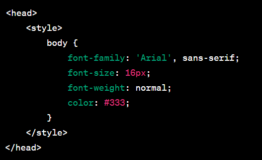
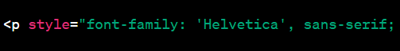
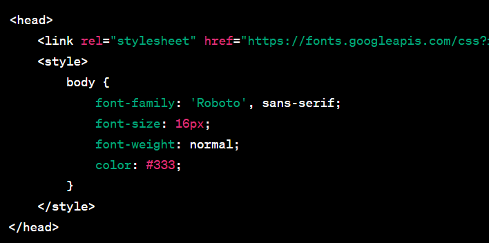

Familias tipograficas:
Las fuentes tipográficas en HTML se utilizan para definir el estilo y la apariencia del texto en una página web. Pueden incluir información sobre el tipo de letra, el tamaño, el peso y otros atributos visuales del texto:
1. Elemento STYLE:
En HTML, puedes especificar el estilo de las fuentes dentro de la etiqueta style en el encabezado de tu documento o en línea directamente en el elemento HTML. Aquí hay un ejemplo en línea:
2. Atributo style en elementos HTML:
También puedes aplicar estilos de fuente directamente a elementos HTML utilizando el atributo style. Aquí hay un ejemplo que cambia el estilo de un párrafo:
3. Enlaces a Fuentes Externas:
Puedes enlazar a fuentes externas para utilizar tipografías específicas en tu página. Esto se logra con la etiqueta LINK dentro del encabezado, referenciando un archivo de fuente externa o una biblioteca en línea, como Google Fonts. Aquí tienes un ejemplo de cómo usar Google Fonts:
4. Propiedad @font-face en CSS:
Si tienes un archivo de fuente personalizado, puedes usar la propiedad @font-face en CSS para incorporarla en tu página web. Aquí hay un ejemplo: